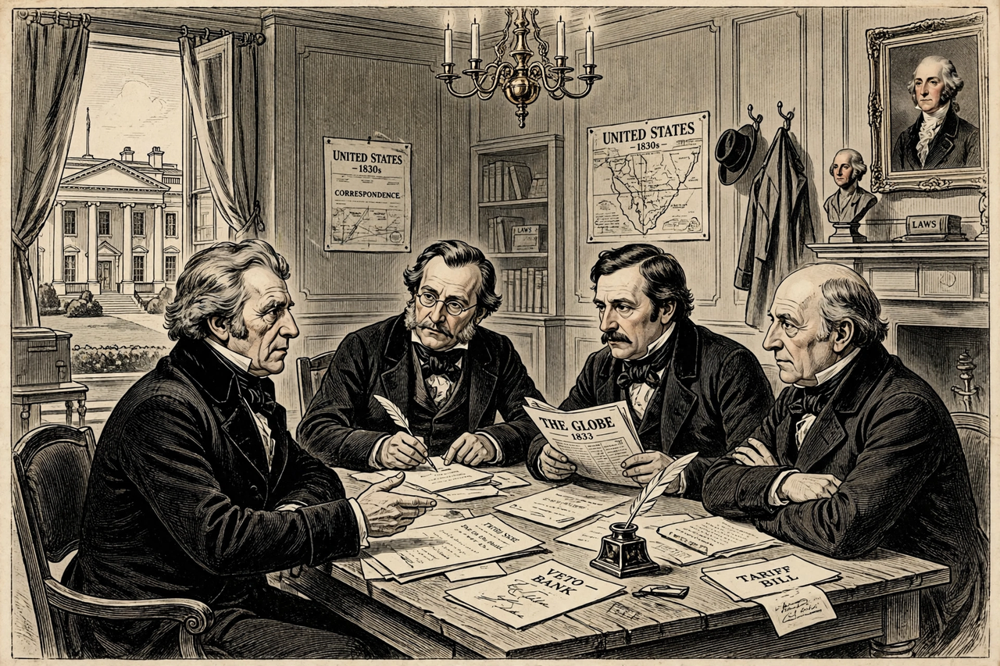

A kitchen cabinet is a group of unofficial or private advisers to a political leader. The term was originally used by political opponents of President of the United States Andrew Jackson to describe his reliance on a set of unofficial advisers, and it has since come into general use for any leader's informal inner circle of trusted confidants, as distinct from the official cabinet or ministry.
The term originated during the administration of Andrew Jackson (1829–1837). After Jackson purged much of his official cabinet in the wake of the Petticoat affair (the Eaton affair) in 1831, he increasingly relied on a circle of close friends and newspaper editors — including Amos Kendall, Francis Preston Blair, Duff Green, Isaac Hill and William B. Lewis — who were said to meet with him in the White House kitchen. Opponents coined the phrase "kitchen cabinet" to suggest that important decisions were being made by unaccountable cronies rather than through constitutional channels.
Later presidents have also been described as relying on kitchen cabinets. Martin Van Buren, Jackson's successor, inherited some of the same advisers. In the twentieth century, the label was applied to advisers surrounding presidents such as Woodrow Wilson (whose confidant Colonel Edward House was sometimes described this way) and Franklin D. Roosevelt, whose "Brain Trust" of academics and officials performed a similar function. The term remains common in American political journalism for any unofficial advisory circle around a president, governor or mayor.
In the United Kingdom, the term has been used for the close circle around prime ministers such as Tony Blair, whose reliance on a small group of advisers was criticised as "sofa government" by the Butler Review. Similar informal groupings exist in many parliamentary systems, where kitchen cabinets may include special advisers, party figures and personal friends alongside or instead of cabinet ministers.
Kitchen cabinets are frequently criticised because their members are typically unelected, unconfirmed by any legislature, and not subject to the same scrutiny or record-keeping as official advisers. Defenders argue that leaders need candid advice from people they trust, free of bureaucratic constraint. The concept is related to the advocacy and lobbying networks that surround modern executives, and to formal bodies such as the cabinet itself.
See also: Cabinet of the United States, Public relations.